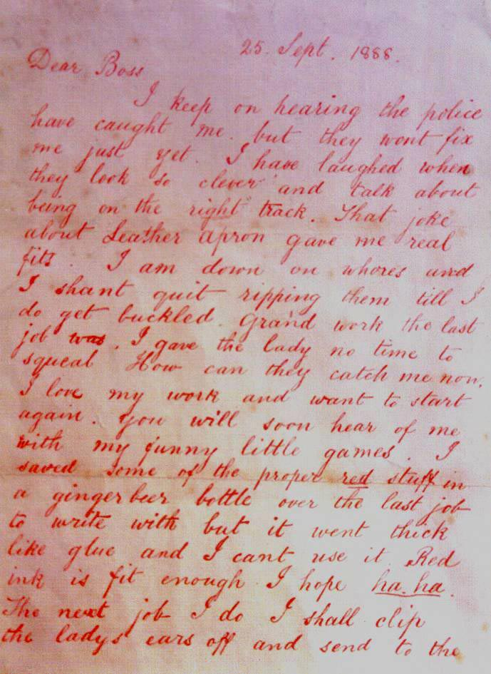
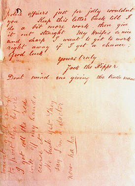
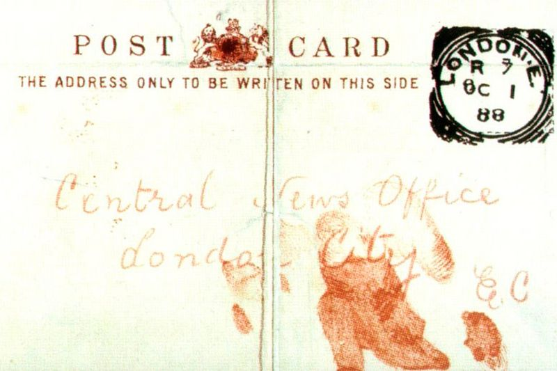

Finales del siglo XIX. Inglaterra es la más poderosa de las naciones de la Tierra, y Londres, la mayor ciudad del mundo. Incluso sin saberlo, eso es algo que cualquier viajero puede intuir de una mirada. Las torres del Parlamento de Westminster se alzan orgullosas para hablar del dominio político británico, del mismo modo que los bancos de la City controlan el comercio internacional. Mientras, el Times da cuenta de las diversiones de la aristocracia en todo lo que va del music hall a las batidas para la caza del zorro. Para guardar la paz, la Armada rige los mares y la admirada policía británica "revela, nada más verla, el esplendor del Imperio". Desde el palacio de Buckingham, la reina Victoria corona la edad de mayor brillo y poder de la historia de Inglaterra.
Sin embargo, no todo es brillo en aquella Inglaterra. Y para comprobarlo no hace falta irse a las minas de carbón o a los "satánicos telares" de Manchester. A muy poca distancia de las elegancias del West End, todavía existe en Londres una zona "inexplorada como Tombuctú". Es el East End y, dentro del East End, Whitechapel es el lugar donde la miseria toca fondo. Hablamos de un dédalo de callejas inundadas por las emanaciones malolientes del Támesis. De unos bajos fondos donde las enfermedades, el alcoholismo y la prostitución causan estragos entre sus ochenta mil almas. De un barrio cuyas casas, hacinadas, parecen inclinarse amenazadoramente sobre quien reúna el valor para pasearse a su sombra. Whitechapel es el Londres que el resto de Londres no quiere ver. Pero, en el otoño de 1888, toda Inglaterra terminaría por volver los ojos a esa barriada de mala nota. Porque Whitechapel iba a ser el siniestro escenario de los crímenes de Jack the Ripper, el Destripador.
Es posible que Jack el Destripador no fuera el más mortífero de los asesinos; a cambio, bien puede ser de los más crueles y -sin duda- es el más famoso de todos ellos. Será que su nombre todavía nos evoca ese miedo que sólo pueden provocar unos pasos en la oscuridad, el resplandor de un súbito cuchillo en una calle solitaria. Será que algunos criminales nunca fueron capturados, pero que a él hubo que ponerle un alias porque ni siquiera se capturó su identidad. Será, en fin, que "los crímenes de Whitechapel" conmovieron los cimientos bienestantes de la sociedad victoriana y desvelaron la existencia de una Gran Bretaña distinta, humillada y pobre.
¿Por qué es tan famoso?
Con él, se inició el terror. Y también el mito. Jack el Destripador fue el autor del asesinato de, al menos, cinco mujeres, todas ellas prostitutas. Diversas películas y series de televisión han estado inspiradas en Jack El Destripador (por ejemplo, “Ripper Street” de la cadena BBC) y en cientas de las teorías que se han propuesto con respecto a la verdadera identidad del personaje, pero ¿qué es de este caso tan especial que continúa interesándonos aún después de 130 años? Después de todo, Jack El Destripador sólo asesinó a cinco personas, eso no lo convierte en el asesino serial más macabro de todos los tiempos, pero entonces ¿cómo es que todos conocemos su nombre?Existe una razón para esto, y es que los periódicos de aquella época se enamoraron completamente de esta historia. Los asesinatos contaron con una gran cobertura de los medios tanto locales como regionales y extranjeros, logrando que la historia fuese conocida alrededor del mundo.
Algunos casos logran captar la atención pública y que todos se interesen en lo que sucede, tal como ocurrió con el caso de O.J. Simpson en la década de los 90. El nombre “Jack El Destripador” (que fue posiblemente creado por algún periódico) reafirmó la infamia de este criminal y lo convirtió en una figura de culto. Aún más importante, los crímenes empezaron a percibirse como el resultado del caos social y el desorden de la era victoriana, y del East End de Londres específicamente.
Víctimas
Hay cinco víctimas de Jack El Destripador que se cree fueron asesinadas en el lapso de 12 semanas. Todas ellas prostitutas, y excepto una, todas fueron brutalmente mutiladas. Las habilidades quirúrgicas del asesino han generado muchas especulaciones y hay quienes aseguran que se trataba de un doctor o un carnicero. Las víctimas fueron las siguientes:- Mary Nichols: 31 de Agosto de 1888 - Fue descubierta en Buck’s Row (actualmente Durward Street, Whitechapel)
- Annie Chapman: 8 de septiembre de 1888 - Descubierta en el patio trasero de 29 Hanbury Street, Spitalfields
- Elizabeth Stride: 30 de septiembre de 1888 - Descubierta en el Dutfield’s Yard de Berner Street (actualmente Henriques Street, Whitechapel)
- Catherine Eddowes: 30 de septiembre de 1888 - Descubierta en Mitre Square en la Ciudad de Londres
- Mary Kelly: 9 de noviembre de 1888 - Descubierta en su casa, 13 Miller's Court, de Dorset Street, Spitalfields.
- Rose Mylett: 19 de Diciembre de 1888 - Descubierta en Clarke’s Yard, High Street, Poplar.
- Alice McKenzie: 9 de Julio de 1889 - Descubierta en Castle Alley, Whitechapel.
- The Pinchin Street torso: 0 de Septiembre de 1889- Descubierto en Pinchin Street, Whitechapel.
- Frances Coles: 13 de febrero de 1891 - Descubierta en Swallow Gardens, Whitechapel.
Lo más espeluznante de los crímenes de Jack el Destripador fue la brutalidad de sus procedimientos: en todos los casos, la garganta de la víctima fue cortada y, en todos los casos el cuerpo fue mutilado de distintas formas. Estas precisas disecciones hicieron pensar a la policía que el asesino debía tener algún conocimiento de anatomía humana.
Las cartas
Otro aspecto del caso que ha generado bastante interés son las cartas enviadas por el asesino a la policía y a los periódicos. La más famosa de estas cartas fue titulada “Querido Jefe”, y estaba firmada por “Jack El Destripador”, dando así al asesino el apodo legendario por el que se le conoce aún en la actualidad.Aunque son muy altas las probabilidades de que esta carta realmente no haya sido escrita por el asesino sino por algún periodista para generar más interés en el caso (objetivo que claramente fue alcanzado), la existencia de esta carta desató el envío de cientos de cartas similares que estuvieron cerca de sabotear por completo las investigaciones policiales.
La llamada carta «Dear Boss» se refiere a un mensaje recibido por la Central News Agency de Londres el 25 de septiembre de 1888, y de autor anónimo, pero que está firmado con el sobrenombre de Jack el Destripador («Jack the Ripper»), y allí afirmando ser el autor de las muertes particularmente violentas sucedidas en el mes de agosto de 1888 en el East End londinense.  
Traducción:
Querido JefeConstantemente oigo que la policía me ha atrapado pero no me echarán mano todavía. Me he reído cuando parecen tan listos y dicen que están tras la pista correcta. Ese chiste sobre “Mandil de Cuero” me hizo partir de risa. Odio a las putas y no dejaré de destriparlas hasta que me harte. El último fue un trabajo grandioso.
No le di tiempo a la señora ni de chillar. ¿Cómo me atraparán ahora? Me encanta mi trabajo y quiero empezar de nuevo si tengo la oportunidad. Pronto oirán hablar de mí y de mis divertidos jueguecitos. Guardé algo de la sustancia roja en una botella de cerveza de jengibre para escribir, pero se puso tan espesa como la cola y no la pude usar. La tinta roja servirá igual, espero, já, já. En el próximo trabajo le cortaré las orejas a la dama y las enviaré a la policía para divertirme. Guarden esta carta en secreto hasta que haya hecho un poco más de trabajo y después publíquela sin rodeos. Mi cuchillo es tan bonito y afilado que quisiera ponerme a trabajar ahora mismo si tengo la ocasión. Buena suerte.
Sinceramente suyo. Jack el Destripador.
No se molesten si le doy mi nombre profesional. No estaba bastante bien para enviar esto antes de quitarme toda la tinta roja de las manos. Maldita sea. No ha habido suerte todavía, ahora dicen que soy médico, já, já…
La carta "From Hell" (en español, Desde el infierno), se refiere a un mensaje franqueado por correo en 1888, y cuya autoría corresponde a una persona que afirmaba ser el asesino serial conocido como 'Jack el Destripador'.
Enviada por correo el 15 de octubre de 1888, esta carta fue recibida un día después por George Lusk, entonces presidente del llamado Whitechapel Vigilance Committee.

Traducción:
Desde el infierno
Sr. Lusk
Te envío la mitad del riñón que tomé de una mujer que preservé para ustedes. El otro trozo la freí y me la comí, fue muy agradable. Quizá les envíe el ensangrentado cuchillo que lo sacó si sólo aguantan un poco más.
Firma: atrápame cuando puedas, Misther Lusk.
La carta original, así como el riñón que lo acompañó, posteriormente se perdió junto con otros artículos del caso, que en un principio estuvieron preservados todos ellos en los archivos policiales. La imagen mostrada en esta página, arriba derecha, es de una fotografía tomada antes de la pérdida.
La postal Saucy Jacky (en español: Jacky el Descarado) es el nombre atribuido a un mensaje recibido en 1888, que supuestamente fue escrito por Jack el Destripador, aunque también cabe la posibilidad de que fuera una broma pesada o bien parte de un plan tal vez urdido por algún medio de prensa o por algún periodista. En realidad no se sabe a ciencia cierta si esa postal es apócrifa o si fue realmente escrita por el llamado asesino de Whitechapel.
La postal Saucy Jacky, que estaba firmada por Jack el Destripador, fue despachada por correo y recibida por el editor de la Central News Agency de Londres, aunque luego fue entregada a Scotland Yard para su análisis e investigación. Posteriormente este mensaje se difundió de forma generalizada. Un facsímil de la postal fue distribuido ampliamente en la época, como parte de las investigaciones, y con la esperanza que de allí alguien pudiera reconocer la letra y a su posible autor. El contenido de la postal era el siguiente:
Cuando le pasé el dato no lo hice en clave, querido Jefe, mañana tendrá noticias sobre el trabajo de Saucy Jacky; esta vez un doble evento. La primera de ellas chilló un poco y no pude terminar [a tiempo]. No tuve tiempo de quitarle las orejas para la policía. Gracias por no haber divulgado mi última carta hasta que me puse a trabajar de nuevo.
Jack el Destripador 
Sospechas
Ante la escasez de evidencia forense y las varias contradicciones de fuentes contemporáneas sobre el caso, resulta casi imposible esclarecer la identidad de Jack el Destripador. Aunque existen análisis de ADN realizados a partir de las cartas atribuidas al homicida, lo cierto es que sus resultados no fueron concluyentes y ya están demasiado adulterados como para proporcionar algún dato útil.
Pese a lo anterior, existen varias teorías sobre la identidad de Jack el Destripador.
Una de las más difundidas en esa época señalaba que el asesino debía vivir en Whitechapel y tener un empleo estable, ya que los crímenes ocurrieron en fines de semana próximos a fechas festivas, y en calles cercanas entre sí. También se pensó que el responsable podía ser un hombre culto y de clase alta, posiblemente un doctor o aristócrata, que había llegado al barrio procedente de un sector más opulento, aunque dichas suposiciones podrían haber obedecido a estereotipos culturales como el temor a los médicos, la desconfianza en la ciencia, o la explotación de los pobres por los ricos.
En los años siguientes a los asesinatos, los registros señalan que la policía tenía sospechas de cualquier persona que estuviese remotamente vinculada con el caso, así como de varias celebridades que ni siquiera habían sido investigadas en la pesquisa original. Con el paso del tiempo, y la muerte de aquellos que vivían en esa época, autores contemporáneos han tenido soltura para acusar a cualquiera «sin necesidad de evidencia histórica».
Si bien un memorándum de Meville Macnaghten de 1894 contenía los nombres de tres sospechosos referidos en los registros policíacos de entonces, lo cierto es que la evidencia contra ellos era meramente circunstancial y por lo tanto no fueron procesados. En total hubo más de cien sospechosos de ser el Destripador, entre los cuales estaban Montague Druitt, Severin Klosowski, Aaron Kosminski y Francis Tumblety. Otros, sin embargo, fueron vinculados solamente por la prensa, como William Bury, Thomas Neill Cream, Robert D'Onston Stephenson y Frederick Deeming.